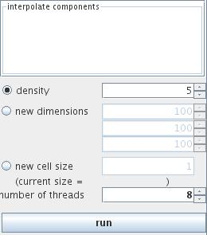

SPLINE INTERPOLATION
The module interpolates the input field using bi/tri cubic splines to given field dimensions or by given density ...
Input data
The input field is regular.
Output data
The output field is regular.
Computation parameters
